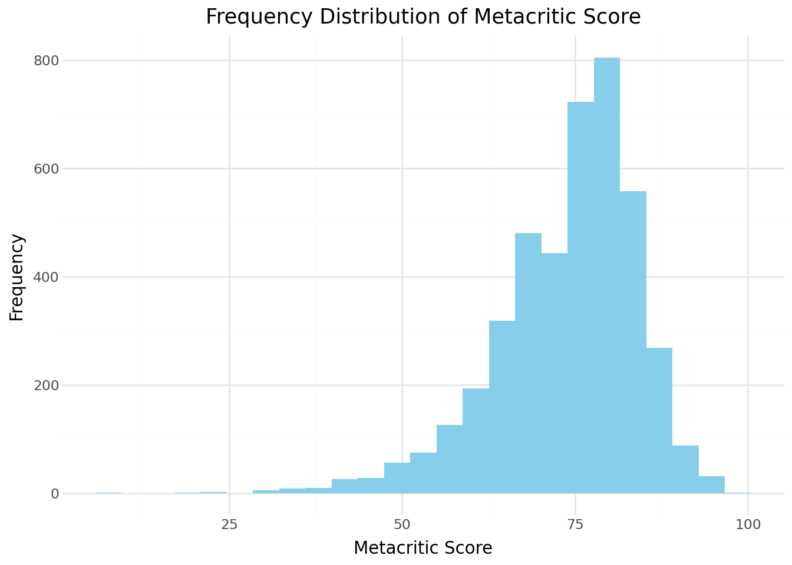
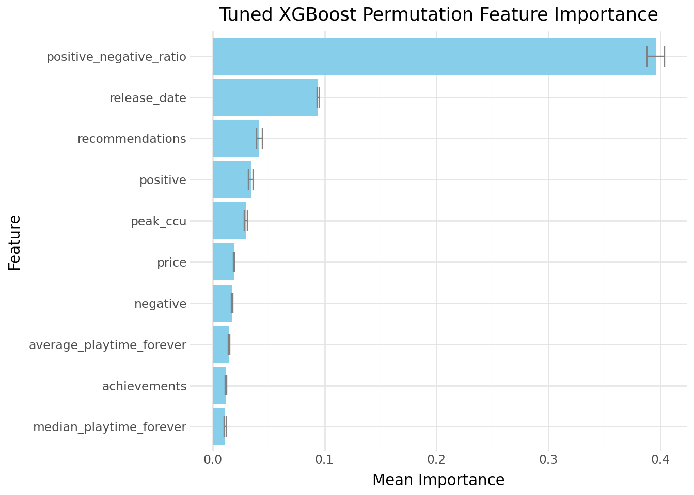

Predicting Metacritic Scores from Steam Data
The GitHub repository containing all code used in this analysis can be found at https://github.com/rrtullis/sample-analysis.
Dataset
The data used in this analysis was sourced from Kaggle. It contains information fetched from Steam’s API and supplemental information from SteamSpy. Steam is a major platform for PC gaming, and holds ~70% market share. A full overview of the games dataset, with information on its features, can be found on the Data Documentation page under Additional Info.
The goal for this analysis was to predict the Metacritic score of a game. Metacritic is an American website that rates TV shows, movies, and video games on a scale of 0-100. The true score is calculated as a weighted average of ratings from top professional critic reviews. The distribution of Metacritic scores in this dataset is shown below.
The scores present in this dataset range from 6 to 97, with a mean of ~73.9 and a standard deviation of ~10.3. The distribution is somewhat left-skewed, but I opted not to transform metacritic_score, as I wanted my model’s predictions to be interpretable as the actual predicted score, rather than a transformation of the score.
Data Cleaning
The data used in this analysis was loaded from a .json and required extensive cleaning before it could be used. This cleaning involved manually typing each feature appropriately, dealing with placeholder missing values, and dropping any columns that wouldn’t be useful for analysis. A full walkthrough of this process can be found on the Data Cleaning page.
The main event for data cleaning came when dealing with five columns in particular: supported_languages, full_audio_languages, genres, and categories all contained lists of strings, and tags contained dictionaries. In order to convert these columns to a usuable format for analysis, I used sklearn’s MultiLabelBinarizer to convert the list columns to a set of binary columns, where a 1 in a given column (e.g., supported_languages_English) would indicate that, for instance, the game supports the English language.
games_encoded = games_typed.copy()
for f in list_features:
mlb = MultiLabelBinarizer()
transformed = mlb.fit_transform(games_typed[f]) # generate binary columns
# convert to DataFrame & apply prefixes
transformed_df = pd.DataFrame(transformed, columns=[f + "_" + str(c) for c in mlb.classes_], index=games_typed.index)
games_encoded = pd.concat([games_encoded, transformed_df], axis=1)
# drop original column
games_encoded = games_encoded.drop(columns=[f])As for tags, I used pandas’ json_normalize method to achieve a similar result, with the main difference that the added columns and values corresponded to key-value pairs in the dictionary. The final dataset that I used to train my models on had 4256 rows and 757 columns.
Initial Models
To begin the modeling phase, I performed a simple repeated K-fold cross validation of a number of basic, untuned models that used sklearn’s and XGBoost’s default parameters. The full preprocessing pipeline and code for each of these models can be found on the Early Models page under Additional Info. An overview of their initial results is shown below.
| Model | Mean RMSE | Mean R2 |
|---|---|---|
| Baseline (Dummy Regressor) | 10.2742 | -0.0003 |
| Untuned Lasso | 9.8811 | 0.0717 |
| KNN-5 | 10.0834 | 0.02752 |
| Untuned Decision Tree | 10.7124 | -0.0975 |
| Untuned Random Forest | 7.6184 | 0.4479 |
| Untuned XGBoost Regressor | 7.6498 | 0.4420 |
Linear models like Lasso performed poorly, as did K-Nearest Neighbors and a lone Decision Tree. The ensemble tree methods of a Random Forest and XGBoost Regressor vastly outperformed the other models.
Iteration
Based off of the initial models’ performance, I chose to iterate on both ensemble tree models. I began with some modest tuning, which slightly improved their performance. As before, a full explanation of my process, along with the code required to reproduce my results, can be found on the Modeling page.
While modeling, I was concerned about the high dimensionality of my data, and thought that if I could distill my 756 features into a smaller number of columns I may get better results. My first attempt at this was to simply remove the columns generated from MultiLabelBinarizer and json_normalize from my training data. The resulting metrics were immediately poorer, and I opted to pursue another angle.
My next attempt involved using sklearn’s TruncatedSVD to generate new features that captured the variance of supported_languages, full_audio_languages, genres, categories, and tags. I used TruncatedSVD over standard PCA since, unlike PCA, TruncatedSVD does not center the data, making it better for sparse data like my own. I also opted to apply TruncatedSVD to each of the five groups of columns seperately because I wanted to preserve the domain of each group. When selecting how many features to return for each group, I made sure that I had enough to capture at least 90% of the variance in the category.
Unfortunately, even after tuning these models still performed worse than my modestly tuned models. What ultimately became my best-performing model was a XGBoost Regressor operating on the original dataset that had been subjected to extensive tuning. The only change was an added feature - the ratio of positive to negative votes, stored in positive_negative_ratio.
Final Model
The full preprocessing pipeline for my final model, along with its tuning grid, is shown below.
New Feature
games=games.copy()
games["positive_negative_ratio"] = games["positive"]/(games["negative"]+1)
num_features += ["positive_negative_ratio"]
features += ["positive_negative_ratio"]
# reinitialize the sets with the new feature
games_train, games_test = train_test_split(
games,
test_size=0.2,
random_state=4025
)Preprocessing Pipeline
dt_ord_prep = Pipeline([ # ordinal feature processing
("imputer", SimpleImputer(strategy="most_frequent")),
("ordinal_encoder", OrdinalEncoder())
])
dt_nom_prep = Pipeline([ # nominal feature processing
("imputer", SimpleImputer(strategy="most_frequent")),
("onehot_encoder", OneHotEncoder(handle_unknown="ignore", drop="if_binary")),
("variance_threshold", VarianceThreshold(threshold=0.01))
])
dt_num_prep = Pipeline([ # numeric feature processing
("imputer", SimpleImputer(strategy="median"))
])
dt_prep = ColumnTransformer([ # full preprocessing setup
("ord", dt_ord_prep, ord_features),
("nom", dt_nom_prep, nom_features),
("num", dt_num_prep, num_features)
])Model & Tuning
xgb_pipe = Pipeline([ # xgb modeling pipeline
("preprocessor", dt_prep),
("model", XGBRegressor())
])
new_xgb_param_grid = { # new, expanded parameter grid
"model__n_estimators": np.linspace(300, 1500, 20, dtype=int),
"model__max_depth": [3, 4, 5, 6, 8],
"model__learning_rate": np.logspace(-2.5, -0.5, 10),
# 'randomness' parameters
"model__subsample": np.linspace(0.6, 1.0, 5), # proportion of observations available to each tree
"model__colsample_bytree": np.linspace(0.3, 1.0, 8), # proportion of columns available to each tree
# split allowance parameters
"model__min_child_weight": [1, 3, 5, 10], # minimum number of samples required in a leaf
"model__gamma": [0, 0.1, 0.3, 1], # minimum reduction in loss required to split
# regularization parameters
"model__reg_alpha": np.logspace(-3, 1, 10), # encourages sparsity in leaves
"model__reg_lambda": np.logspace(-2, 2, 10), # shrinks leaf weights
}
new_xgb_rs = RandomizedSearchCV(
xgb_pipe,
new_xgb_param_grid,
n_iter=200,
cv=rkf,
scoring=["neg_mean_squared_error", "r2"],
refit="neg_mean_squared_error",
n_jobs=-1,
random_state=4025
)This tuning process found that the following parameters were optimal:
best_parameters = {
"model__n_estimators": 1247,
"model__max_depth": 6,
"model__learning_rate": 0.000779,
# 'randomness' parameters
"model__subsample": 0.7, # proportion of observations available to each tree
"model__colsample_bytree": 0.000999, # proportion of columns available to each tree
# split allowance parameters
"model__min_child_weight": 1, # minimum number of samples required in a leaf
"model__gamma": 0.1, # minimum reduction in loss required to split
# regularization parameters
"model__reg_alpha": 0.000434, # encourages sparsity in leaves
"model__reg_lambda": 4.6415, # shrinks leaf weights
}The final results of this model on the test set are shown below.
best_xgb = pickle.load(open("saved_objects/tuned_xgb.pkl", "rb"))
xgb_preds = best_xgb.predict(games_test[features])
xgb_r2 = r2_score(games_test[target], xgb_preds)
xgb_rmse = root_mean_squared_error(games_test[target], xgb_preds)
print("New XGBoost R2:", xgb_r2)
print("New XGBoost RMSE:", xgb_rmse)New XGBoost R2: 0.5185717254641573
New XGBoost RMSE: 7.127757438729044In the end, I had a tuned XGBoost Regressor that had a test RMSE of ~7.1 and an R2 score of ~0.52. I used permutation importance to determine which features the model relied on the most.

Interpretation
Based on my metrics, my model was able to explain ~52% of the variance in Metarcitic score, and made predictions that were, on average, off by ~7.1 points. This is a notable improvement over a dummy regressor, but is not particularly impressive overall. One reason for this mediocore performance may be that the games dataset does not contain information that is particularly relevant to a game’s Metacritic score. Most of the data used in this analysis was scraped from the Steam store, and while a storefront is a decent place to start collecting information, a game’s store presentation does not necessarily reflect how people will percieve or rate it. Were the dataset to contain more relevant information, I expect the performance metrics could be improved drastically.
As for the columns we do have, the model relies most heavily upon the engineered ratio of positive to negative votes, followed distantly by release date and the number of recommendations. Any future iterations of this project should focus more heavily on feature engineering that captures information related to how a game may be percieved by critics and players.